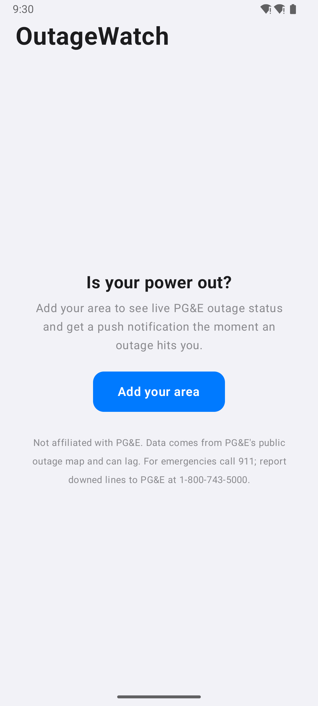
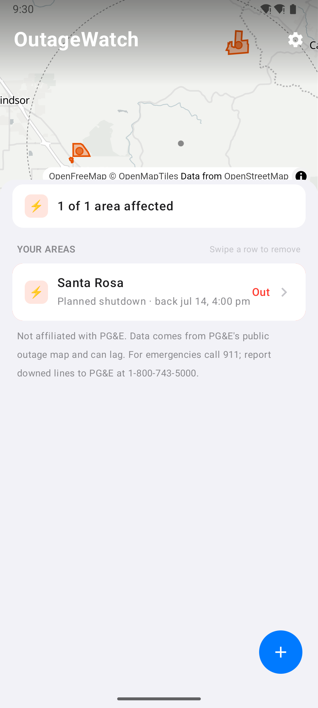
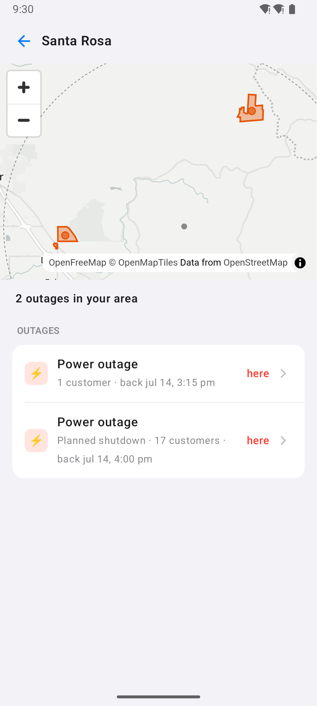
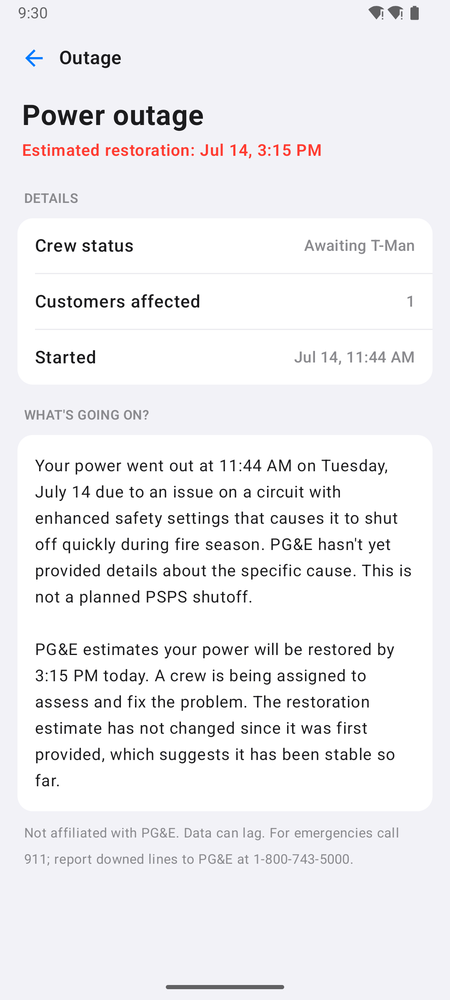
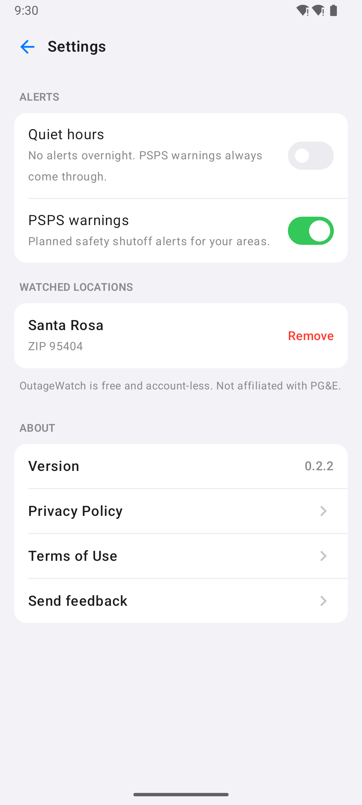

Know before the lights go out.
Push alerts, restoration times, and plain-language answers for power outages in PG&E territory. Free, no account, no ads. On the web, iPhone, and Android.
Watches PG&E's public outage map for the places you save, and tells you the moment one reaches your address.
PG&E outage feed ---- polled every 5 minutes ----> diff against last snapshot | outage covers a place you saved ---+---> push to your phone
The app
Your places, at a glance
One shared design on iPhone and Android, built from the outage data itself: what is out, who is fixing it, and when power is expected back.





Get it
Three ways in, all free
Web
Nothing to install. Check any address or ZIP right now, and browser alerts are available too.
Open the web appiPhone
A free beta through TestFlight. Install Apple's TestFlight app, then join with one tap.
Join the TestFlight betaUpdates arrive automatically through TestFlight.
Android
A signed APK, straight from GitHub Releases. It updates itself in place.
Download the APKAndroid may warn it has not seen this developer before; tap More details, then Install anyway.
The promise
Only four things ever notify you
- An outage started at your location
- The restoration estimate moved by more than 30 minutes
- Power was restored
- A PSPS safety shutoff is planned for your area
Quiet hours are respected for everything except PSPS warnings. By default a saved address alerts only when an outage actually covers it, not merely nearby. Nothing else, ever.
Under the hood
Built to be trusted
Plain-language answers
Every outage gets a short, calm "what is going on and when is it coming back", written from the real feed data only. The model may not invent causes or restoration times.
No account, no tracking
No sign-up, no name, no email. Your saved places and an anonymous push token exist only to deliver your alerts. No ads, no analytics.
Open source
The whole thing is MIT-licensed on GitHub: the apps, the backend, and this page. Read exactly what it does with your data.
Honest by design
PG&E's feed gives outages, not grid topology, so OutageWatch never draws circuits it cannot see and never claims more precision than the data has.